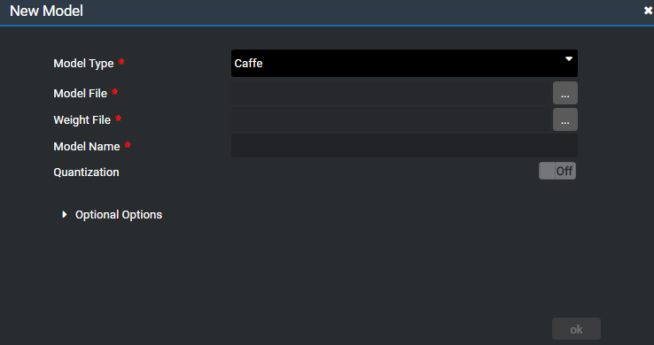

Using this Sample with yourself Detection Model
本章节提供如何替换人脸检测application中网络模型的方法。
当前application中使用了基于caffe的SSD300模型。
- 网络下载地址：https://github.com/opencv/opencv/blob/master/samples/dnn/face_detector/deploy.prototxt
- 训练后的权重值下载地址：https://github.com/opencv/opencv_3rdparty/tree/dnn_samples_face_detector_20170830
开发者也可以将其替换为自己的网络模型，模型替换方法如下：
预先准备好网络的模型文件以及基于网络训练好的权重文件。
 说明：
说明： - 目前MindStudio对Caffe的模型支持性比较好，算子基本都支持，Tensorflow欠友好，算子库在不断补齐中。
- 后处理Engine仅支持SSD输出，若为其他类型，需同步修改代码。
- 若导入的模型算子不支持，请选择相关可替换的算子或参考《算子开发指导书》自定义算子。
双击“facedetectionapp.mind“文件进入流程编辑。
选择tools选项卡，点击My Models右侧的”+”按钮打开下图所示对话框，选择模型对应的框架并且上传模型文件与权重文件，点击ok生成自定义模型。

模型转化的详细操作可参考《Mind Studio基本操作》中的“模型管理“章节。
如果模型转化失败，根据失败报告对算子进行重命名或者自定义开发，自定义开发算子的详细操作请参见《算子开发指导书》。
在画布中右键选中FaceDetectionModel模型文件右键选择删除，从My Modes拖入开发者创建的模型并拖动连线将其在流程图中与FaceDetectionInferenceEngine连接。
- 点击Save保存mind文件。
根据模型需要，修改FaceDetectionPreProcess属性页中的resize参数。
点击Generate更新配置信息。
如果您有更好的网络模型，欢迎上传到https://github.com/ascend进行分享。